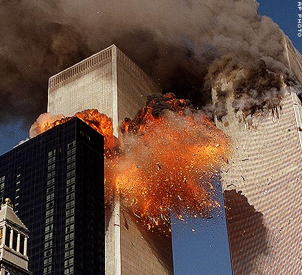

Története a támadásnak
A 2001. szeptember 11-ei terrortámadások, az al-Káida terrorszervezet összehangolt öngyilkos merényletsorozata volt az Egyesült Államok ellen. Azon a reggelen 19 al-Káida gépeltérítő szállt fel amerikai utasszállító repülőgépekre, hogy az USA fő jelképeinek számító épületekbe vezessék bele a gépeket.
Célpontok
A New York-i Világkereskedelmi Központ ikertornyaiba egy-egy repülőgép csapódott be, az épületek kigyulladtak, és két órán belül mindkettő összeomlott. Ezt követően több épület is az ikertornyokhoz hasonlóan összedőlt, vagy megrongálódott a környéken. A harmadik repülőgép a Pentagon Virginia állambeli arlingtoni épületébe repült.
Az a bizonyos 4. gép
A negyedik eltérített gépet egyes feltételezések szerint a terroristák a Fehér Házba irányították volna, de az utasok visszafoglalták, azonban már nem tudták megmenteni a lezuhanástól. Ez a gép Washingtontól mindössze 15 percnyire, Pennsylvania államban, Shanksville mellett csapódott a földbe.
Áldozatok
A repülőgépek egyetlen utasa sem élte túl a támadásokat.
A terrorakció folyamán a géprablókkal együtt összesen 2995 ember vesztette életét. Az áldozatok túlnyomó többsége civil volt.